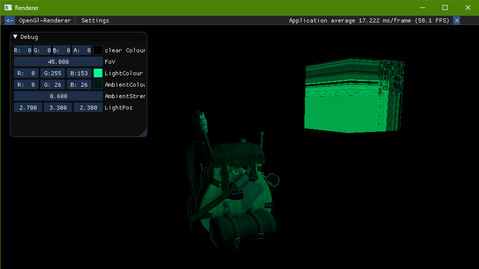
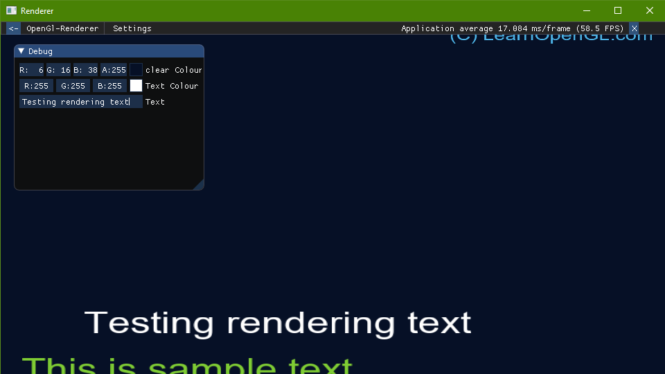

OpenGL Renderer
For my 4th uni dissertation I created a basic openGL renderer to render the visuals of my project. It was only really built to do just that though, so after my project I decided to try and make it a bit more generic so I could use it for any project I wanted. At some point I just stopped working on it.
However, recently I've picked it back up and have been coming back to to work on it more and more. I'm really enjoying working on it as it's testing and improving my knowledge of renderering. I don't have a direction for the renderer at the moment and I definetly have a lot to learn and a lot of mistakes to make with it.
 I imagine at some point I will once again shelve this project to effectively restart it with all the mistakes I've learned in mind, but I think making a simple game with it may be a good goal for this personal project.